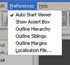

Main Menus
The Main Menu Bar is located at the top of the screen and has four menus. All menus are available at all times. The Viewer menu has a selection of the options available in the Viewer menu from the full Viewer application. The contents of all these menus is shown below.
File Menu

- New Project -
Creates a new project
- Load Project -
Loads and existing project (UIP) file
- Save Project... -
Saves the current project and any other open files
- New UI... -
Creates a new UI file. The file is added into the root GROUP file
- Save UI... -
Save the currently open UI file
- Exit -
Exits the Program
Viewer Menu

- Restart Viewer -
If the viewer has not been initialized, Initialize the viewer and load the root group otherwise clean out the data and reload the root group
- Portrait -
Displays assets in Portrait view
- Landscape -
Displays assets in Landscape view
- Hardware Only -
Uses only Hardware for rendering in the Viewer
- Software Only -
Uses only Software for rendering in the Viewer
- Dynamic HW/SW -
Uses both Hardware and Software for rendering in the Viewer
- Scanline Renderer (SW) -
Uses the Scanline renderer for rendering in the Viewer
- Z-Buffer Renderer (SW) -
Uses the Z-Buffer renderer for rendering in the Viewer
- GLES 2.x (HW) -
Uses the GLES 2.x renderer for rendering in the Viewer
- 176 x 203 BREW -
A Preset Screen Size
- 320 x 480 HVGA -
A Preset Screen Size
- 240 x 320 QVGA -
A Preset Screen Size
- 352 x 416 N-Series -
A Preset Screen Size
- 480 x 320 IPhone -
A Preset Screen Size
- Custom Size... -
Shows a dialog which allows you to choose custom height and width of the view
Preferences Menu

- Auto Start Viewer -
Loads the root Group into the Viewer on start-up
- Show Assert Box -
Shows pop-up assert messages, uncheck to send assert messages to the log window
- Outline Hierarchy -
Toggles debug drawing for the Hierarchy in the Viewer
- Outline Siblings -
Toggles debug drawing for the Siblings in the Viewer
- Outline Margins -
Toggles debug drawing for the Margins in the Viewer
Help Menu

- Help File... -
Opens the Help File
- About ASUI Builder... -
Shows the About Box